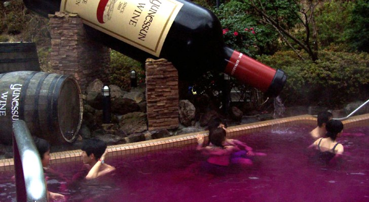

Rondreis door Amerika in een Volkswagen busje.
Wil jij op een echte vrije reis door Amrika? Dan is dit wat voor jou!
Je maakt die rondreis in een oude volkswagen busje je gaat van alles zien en meemaken op je reis dat
kunnen
wij je garanderen.
Wij houden van de natuur en lekker buiten zijn en daarom ga je Na zo'n dagje vrij zijn slapen onder de
drie
sterren.
Grand Teton National Park

Zion National Park

Yellowstone National Park

Kenai Fjords National Park

Glacier National Park
.